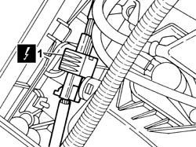
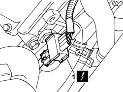
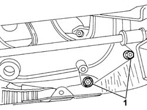
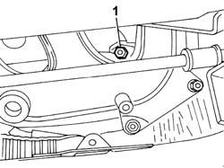
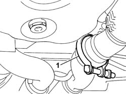
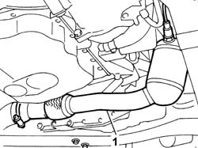
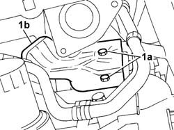
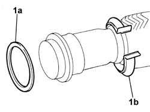
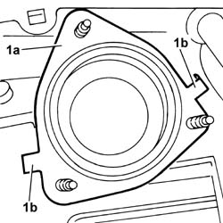
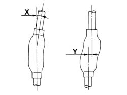

1080B38 LEFT CATALYTIC PRECONVERTER R R OR REPLACE CYLINDER HEAD GASKET
- Path
- Procedures > 10 ENGINE > 1080 EXHAUST EMISSION CONTROL SYSTEM > 1080B EXHAUST EMISSION CONTROL SYSTEM > 1080B38 LEFT CATALYTIC PRECONVERTER R R OR REPLACE CYLINDER HEAD GASKET
- Kind
- repair procedure (removal / refitting; the operation number is the code)
- Applies to
- all engines; all production periods
- Interactive page
- https://sloeber94.github.io/elrnDB-fUlss/en/#/179000214
Applies to: engines: 3.0 24V V6; all production periods
 Removing
Removing
 Refitting
Refitting- Position the vehicle on the lift.
- Disconnect the negative battery terminal.
Description | Connector | |
|---|---|---|
. | Battery |
Op. 1016A42 LEFT HAND CYLINDER HEAD IGNITION COIL COVER - R+R
1. Disconnect the electrical connection for the upper Lambda sensor and release the wiring from the fastenings.
Description | Connector | |
|---|---|---|
1 | Lambda sensor on pre-catalyzer |

Applies to: engines: 3.0 24V V6; all production periods
1. Disconnect the electrical connection for the lower Lambda sensor and release the wiring from the fastenings.
Description | Connector | |
|---|---|---|
1 | Lambda sensor on catalyzer |

Applies to: engines: 3.0 24V V6; all production periods
Op. 1072C40 L.H. EXHAUST MANIFOLD HEAT SHIELD ON BULKHEAD R + R
-

Applies to: engines: 3.0 24V V6; all production periods
Op. 7055B54 UNDER-ENGINE GUARD - R R
1. Working beneath the vehicle, unscrew the remaining bolt securing the preconverter to the exhaust manifold.

Applies to: engines: 3.0 24V V6; all production periods
1. Loosen the band joined to the right pre-catalyzer pipe and release it from its housing.

Applies to: engines: 3.0 24V V6; all production periods
1. Working carefully in order not to damage the Lambda sensors and the flexible pipe, remove the pre-catalyzer from the vehicle.

Applies to: engines: 3.0 24V V6; all production periods
1. Undo the retaining bolts (1a) and remove the heat shield (1b) from the starter motor.

Applies to: engines: 3.0 24V V6; all production periods
Refitting
Removing- Place the heat shield on the starter motor and tighten the fixing bolts.
1. Replace the gasket (1a) and the band (1b) connected to the right pre-catalyzer pipe.

Applies to: engines: 3.0 24V V6; all production periods
1. Replace the gasket (1a) between the exhaust manifold and the pre-catalyzer and bend the tabs (1b) behind the exhaust manifold flange to secure it in the correct fitting position.

Applies to: engines: 3.0 24V V6; all production periods
1. Do not distort the front flexible pipe beyond the angular value of X = 20° and the cutting value of Y = 25 mm.

Applies to: engines: 3.0 24V V6; all production periods
- Fit hte preconverter and tighten the nut to the exhaust manifold.
1. Fit the band on the exhaust pipe and tighten it.
Applies to: engines: 3.0 24V V6; all production periods
- Lower the vehicle.
- Tighten the remaining nuts fixing the pre-catalyzer to the exhaust manifold to the recommended torque.
- Tighten the nuts securing the preconverter to the exhaust manifold to the specified torque.
 | Value - daNm | Fastening | Component | Ø |
|---|---|---|---|---|
. | 3,3 | Nuts | LEFT CATALYTIC PRECONVERTER |
Op. 1072C40 L.H. EXHAUST MANIFOLD HEAT SHIELD ON BULKHEAD R + R
- Connect the electrical connection for the lower Lambda sensor to the catalyzer and secure the wiring.
Description | Connector | |
|---|---|---|
. | Lambda sensor on catalyzer |
- Connect the electrical connection for the upper Lambda sensor to the pre-catalyzer and secure the wiring.
Description | Connector | |
|---|---|---|
. | Lambda sensor on pre-catalyzer |
Op. 7055B54 UNDER-ENGINE GUARD - R R
Op. 1016A42 LEFT HAND CYLINDER HEAD IGNITION COIL COVER - R+R
- Connect the negative battery terminal.
Description | Connector | |
|---|---|---|
. | Battery |
- Remove the vehicle from the lift.